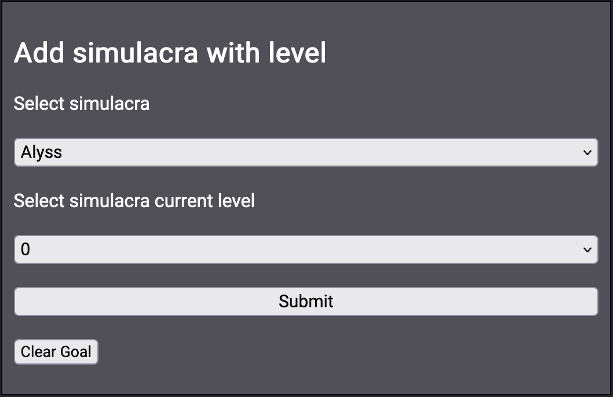
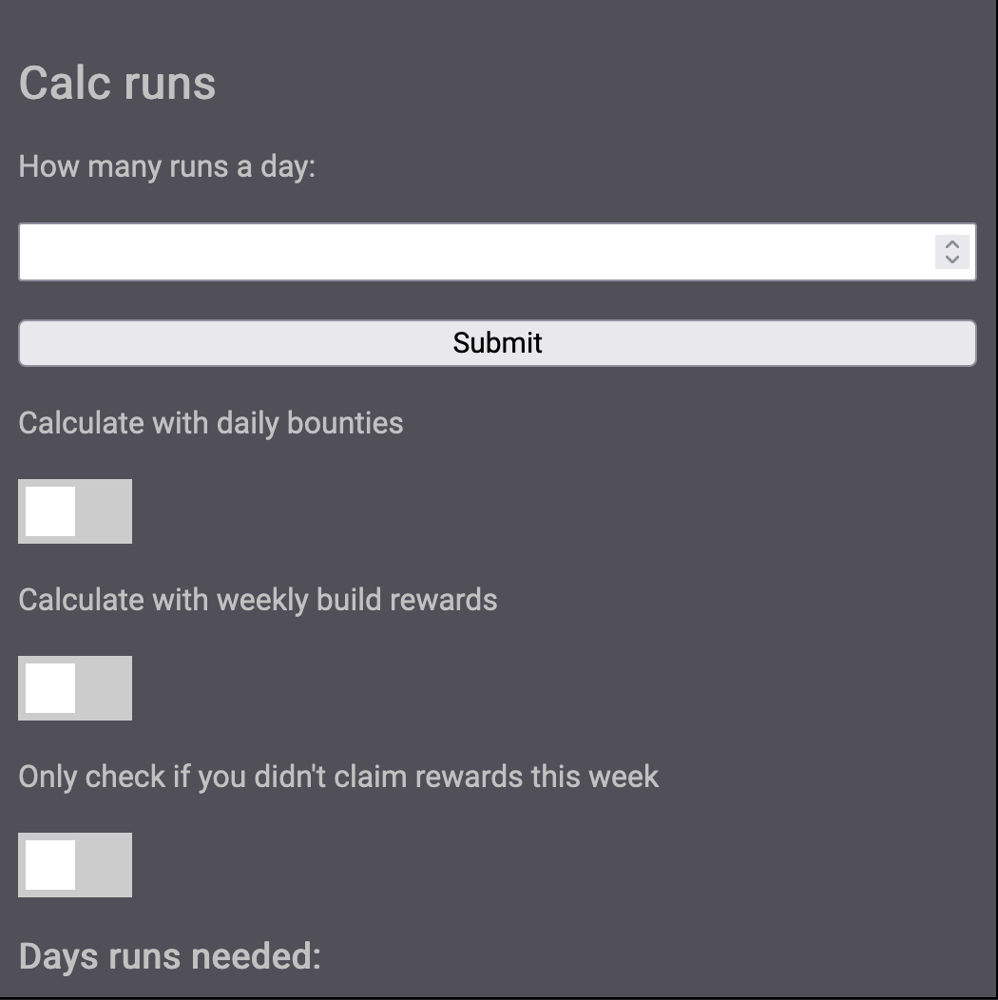

Save materials, boxes, batteries to file
Download
Dimensional runs
On the dimensional runs page you can add the Simulacra you want to level.

The "Select simulacra" is a selection box. Choose a simulacra you want to level.
The "Select simulacra current level" is the level the select simulacra is currently on.
It will take that level as its base and calculate the needed materials until the max level.
- Info:
- Current max level is: 150
- Next max level is: 160 Material calculations will be done up until level 160 (Expect gold and EXP, these aren't know untill level increase)
If 0 is selected as current level all materials and gold will be calculated for level 0 > 160
Dimensional runs
"How many runs a day" is an input box, put here the number of runs you want to do a day.
"Calculate with daily bounties" is a toggle, if selected it'll take the daily boxes of the current day and sequential days into the calculations.
"Calculate with weekly rewards" is a toggle for the island rewards. If selected it'll calculate the days 1 rewards cycle per 7 days run.
"Only check if you didn't claim rewards this week" is a toggle for the island rewards aswell. Only toggle it if you didn't claim this weeks rewards.
Info:Calculations are done on Dimensional Trails difficulty 6 (Updates to the next difficulty when added.)
- Without daily bounties:
- 1x Weapon Augmentation box IV
- 1x Weapon Augmentation box III
- 2x Weapon Augmentation box II
- 2x Weapon Augmentation box I
-
With daily bounties (Every day): Above +
- 3x Weapon Augmentation box I
- 2x Weapon Augmentation box II
-
With weekly island rewards (Every 7 days): Above +
- 30x Weapon Augmentation box I
- 15x Weapon Augmentation box II
Updates
| Number | Summary | Changes | Notes |
|---|---|---|---|
| 1.0 | Changed website layout and style | With the fully functional release, a new layout! Split the calculator into multiple pages. Info tab added aswell! |
- |
| 1.1 | Update simulacra | Fenrir added to the pool. Fixed the numbers for Lin, her materials where a guess and now that she's out the correct numbers are displayed. There was a mistake on Crow material numbers, this has been fixed. |
- |
| 1.1 | Added images for the different items | Added the images for the different materials, boxes and batteries for easier recognition. | If the site doesn't load correctly, download your materials and clear site cache. For iPhone: Settings > Safari > Advanced settings > Website Data > search:tofmc.com > Swipe left until deleted. |
| 1.2 | Backup and upload | You can now backup your materials to a JSON file and reupload them. If you switch devices / browsers you can now take the materials with you. | - |
| 1.2.1 | Fixed Alyss | For Alyss material needed said: Booster Frame, changed it to the correct material of Nanofiber. | Thanks to the user for reporting this! |
| 1.2.2 | Added Lan and Icarus | Added Lan and Icarus to the calculator. The other simulacra will be added when their materials are revealed. | - |
| 1.2.3 | Added Fiona, level 180 | Added Fiona to the calculator. Added the materials for level 180 simulacra. | - |
| 1.2.4 | Added Gnonno and level 200 | Added Gnonno to the calculator. Added the materials for level 200 simulacra. | 23-05-2023 |
| 1.2.5 | Added Yulan, Garnett and Rubilia | Added Yulan, Garnett and Rubilia to the calculator for preperations for the future. | 25-05-2023 |
Features
| Summary | Changes | Notes |
|---|---|---|
| Add matrice level calculation | Add a calculator that looks at your materials to see if you have enough to level your matrice. | - |